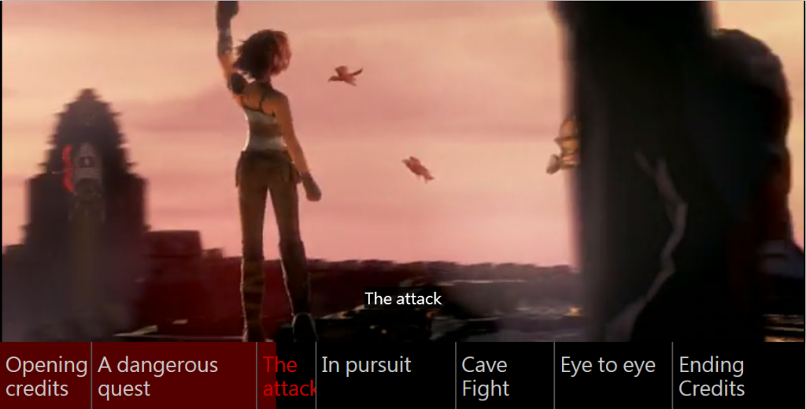

HTML5 的 <video> 元素可在網頁中嵌入影片，就像嵌入圖片一樣簡單。各款主要瀏覽器均自 2011 年起支援 <video>，幾乎已經是最佳的動畫呈現方式。

而最近加入 HTML5 家族的 <track> 元素，其實就是 <video> 的子元素，可提供更好用的影片時間列，主要用以添增字幕 (Closed caption，CC)。這類字幕均以獨立的文字檔(WebVTT 檔案) 所載入，並顯示於影片底部。Ian Devlin 已針對這一點寫過一篇《幫你的 HTML5 影片添加字幕》。
除了字幕之外，<track> 元素也能用於影片時間列的互動功能。本文將概略說明三個範例：章節標記、預覽縮圖、時間列搜尋。你看完就能了解 <track> 元素及其 API，並建構自己的互動式影片。
章節標記
先來看看 DVD 光碟常見的「章節標記 (Chapter marker)」。此功能可跳到特定章節繼續觀看內容，特別適合如《辛特爾 (Sintel)》這類的長影片：
本範例所用的章節標記，是附掛於外部 VTT 檔案之中，並透過一組 <track> 元素 (搭配 kind 屬性設定為 chapters ) 載入至頁面上。且此「track」已設定為預設載入：
<video width="480" height="204" poster="assets/sintel.jpg" controls>
<source src="assets/sintel.mp4" type="video/mp4">
<track src="assets/chapters.vtt" kind="chapters" default>
</video>
1234
<video width="480" height="204" poster="assets/sintel.jpg" controls> <source src="assets/sintel.mp4" type="video/mp4"> <track src="assets/chapters.vtt" kind="chapters" default></video>
接著我們用 JavaScript 載入各影音軌的文字提示、轉換其格式，並在影片底端的控制列中顯示提示文字。另請注意，這裡必須先等到外部 VTT 檔案載入完畢：
track.addEventListener('load',function() {
var c = video.textTracks[0].cues;
for (var i=0; i<c.length; i++) {
var s = document.createElement("span");
s.innerHTML = c[i].text;
s.setAttribute('data-start',c[i].startTime);
s.addEventListener("click",seek);
controlbar.appendChild(s);
}
});
12345678910
track.addEventListener('load',function() { var c = video.textTracks[0].cues; for (var i=0; i<c.length; i++) { var s = document.createElement("span"); s.innerHTML = c[i].text; s.setAttribute('data-start',c[i].startTime); s.addEventListener("click",seek); controlbar.appendChild(s); }});
在上面的程式碼中，我們為各章節提示元素添增了兩項屬性，才得以達到互動功能。首先必須設定資料屬性，以儲存章節的起始位置；其次就是針對外部的搜尋 (Seek) 功能，添增點擊處理器 (Click handler)。此功能可直接讓影片跳到起始位置。如果還是不能播放影片，則如下處理：
function seek() {
video.currentTime = this.getAttribute('data-start');
if(video.paused){ video.play(); }
};
1234
function seek() { video.currentTime = this.getAttribute('data-start'); if(video.paused){ video.play(); }};
就是這樣！現在你的影片就能透過 VTT 而顯示章節選單了。另請注意此實際章節標記範例具有更多邏輯，例如點擊即可回播影片、根據影片播放進度而更新控制列、新增某些 CSS 風格等。
預覽縮圖
接著是因「Hulu」與「Netflix」兩大影音網站而廣為大家喜愛的酷炫功能：預覽縮圖。只要用滑鼠在控制列 (或行動裝置) 上拖曳，就能預覽目前搜尋位置的縮圖：
此功能同樣需透過外部 VTT 檔案進行，並於後設資料 (Metadata) 影片軌中載入。此 VTT 檔案中的提示資料包含獨立 JPG 圖像的連結，而非純文字；每個提示資料都能連上獨立的圖像，但此範例中僅使用單一 JPG sprite，進以達到較短延遲並方便管理。我們透過 Media Fragment URI 讓提示資料能連上 sprite 的正確區段。範例如下：
{kind=link}
http://example.com/assets/thumbs.jpg?xywh=0,0,160,90
1
http://example.com/assets/thumbs.jpg?xywh=0,0,160,90
接著，所有取得正確縮圖並即時顯示的重要邏輯，都會在控制列的「mousemove」這個監聽器 (Listener) 中：
controlbar.addEventListener('mousemove',function(e) {
// first we convert from mouse to time position ..
var p = (e.pageX - controlbar.offsetLeft) * video.duration / 480;
// ..then we find the matching cue..
var c = video.textTracks[0].cues;
for (var i=0; i<c.length; i++) {
if(c[i].startTime <= p && c[i].endTime > p) {
break;
};
}
// ..next we unravel the JPG url and fragment query..
var url =c[i].text.split('#')[0];
var xywh = c[i].text.substr(c[i].text.indexOf("=")+1).split(',');
// ..and last we style the thumbnail overlay
thumbnail.style.backgroundImage = 'url('+c[i].text.split('#')[0]+')';
thumbnail.style.backgroundPosition = '-'+xywh[0]+'px -'+xywh[1]+'px';
thumbnail.style.left = e.pageX - xywh[2]/2+'px';
thumbnail.style.top = controlbar.offsetTop - xywh[3]+8+'px';
thumbnail.style.width = xywh[2]+'px';
thumbnail.style.height = xywh[3]+'px';
});
123456789101112131415161718192021222324
controlbar.addEventListener('mousemove',function(e) { // first we convert from mouse to time position .. var p = (e.pageX - controlbar.offsetLeft) * video.duration / 480; // ..then we find the matching cue.. var c = video.textTracks[0].cues; for (var i=0; i<c.length; i++) { if(c[i].startTime <= p && c[i].endTime > p) { break; }; } // ..next we unravel the JPG url and fragment query.. var url =c[i].text.split('#')[0]; var xywh = c[i].text.substr(c[i].text.indexOf("=")+1).split(','); // ..and last we style the thumbnail overlay thumbnail.style.backgroundImage = 'url('+c[i].text.split('#')[0]+')'; thumbnail.style.backgroundPosition = '-'+xywh[0]+'px -'+xywh[1]+'px'; thumbnail.style.left = e.pageX - xywh[2]/2+'px'; thumbnail.style.top = controlbar.offsetTop - xywh[3]+8+'px'; thumbnail.style.width = xywh[2]+'px'; thumbnail.style.height = xywh[3]+'px';});
這樣就可以了！必須再次提醒，即時預覽縮圖的實際範例另包含額外程式碼；其啟動回播與搜尋的邏輯仍相同；且當滑鼠游標接觸/移出工具列時，其顯示/隱藏縮圖的邏輯也一樣。
時間軸搜尋
最後就是影片中的時間軸搜尋功能：
此範例將利用現有的 VTT 字幕檔案 (已載入至字幕軌中)。我們在影片與控制列下方另外提供搜尋框：
<form>
<input type="search" />
<button type="submit">Search</button>
</form>
1234
<form> <input type="search" /> <button type="submit">Search</button></form>
如同剛剛的縮圖範例，所有的關鍵邏輯都包含於單一函式之中。但這裡則是提交搜尋表單的事件處理器 (Event handler)：
form.addEventListener('submit',function(e) {
// First we’ll prevent page reload and grab the cues/query..
e.preventDefault();
var c = video.textTracks[0].cues;
var q = document.querySelector("input").value.toLowerCase();
// ..then we find all matching cues..
var a = [];
for(var j=0; j<c.length; j++) {
if(c[j].text.toLowerCase().indexOf(q) > -1) {
a.push(c[j]);
}
}
// ..and last we highlight matching cues on the controlbar.
for (var i=0; i<a.length; i++) {
var s = document.createElement("span");
s.style.left = (a[i].startTime/video.duration*480-2)+"px";
bar.appendChild(s);
}
});
123456789101112131415161718192021
form.addEventListener('submit',function(e) { // First we’ll prevent page reload and grab the cues/query.. e.preventDefault(); var c = video.textTracks[0].cues; var q = document.querySelector("input").value.toLowerCase(); // ..then we find all matching cues.. var a = []; for(var j=0; j<c.length; j++) { if(c[j].text.toLowerCase().indexOf(q) > -1) { a.push(c[j]); } } // ..and last we highlight matching cues on the controlbar. for (var i=0; i<a.length; i++) { var s = document.createElement("span"); s.style.left = (a[i].startTime/video.duration*480-2)+"px"; bar.appendChild(s); }});
這樣又完成了！同樣的，即時的時間列搜尋範例也有額外程式碼可啟動回播與搜尋作業，另有程式碼片段可更新工具列的輔助說明文字。
全部包起來用
上述範例可讓你設計出自己的互動式影片。如果需要更多靈感，可參考可點擊的影片章節捷徑、互動式逐字稿、時間軸互動等影片。
整體來說，如果想提升自己影片的互動功能，HTML5 的 元素絕對是簡單易用又能跨平台的好方法。只要你肯花時間寫出 VTT 檔案並打造類似的經驗，就能提高影片的能見度而獲得更高點閱率。祝你順利囉！